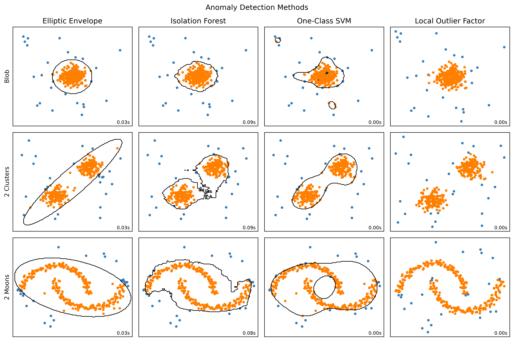

Unsupervised Learning (II): Anomaly Detection
Objectives
Explain what anomaly detection is and how it differs from clustering and classification.
Understand the intuition behind distance-based, density-based, isolation-based and reconstruction-based methods.
Apply representative anomaly detection algorithms in practice.
Understand how anomaly detection models are evaluated when labels are available and when they are not.
Explore real-world applications in science, engineering, and cybersecurity.
Instructor note
30 min teaching/demonstration
30 min exercises
Anomaly Detection
Over the last two episodes, we addressed key challenges of unsupervised learning in high-dimensional data. We first used clustering to discover natural groups in unlabeled observations, and then applied dimensionality reduction to simplify complex feature spaces and make structure easier to interpret.
In this episode, we shift focus from grouping typical patterns to detecting unusual ones. In many real-world settings, the most important observations are those that differ markedly from the majority. These observations are known as anomalies, outliers, or rare events.
Anomaly detection is a key unsupervised learning task that identifies observations that deviate from expected patterns, typically without requiring labeled anomaly examples.
Applications of Anomaly Detection
Scientific Research: Rare astronomical events, unusual biological measurements, experimental errors.
Industrial Monitoring: Equipment degradation, sensor failures, manufacturing defects.
Cybersecurity: Suspicious network activity and intrusion detection.
Finance: Fraud detection and risk monitoring.
Healthcare: Identifying abnormal physiological measurements.
Why Anomaly Detection Is Hard
Anomaly detection is difficult for two main reasons: anomalies are rare (often less than 1% of the data), and they are open-ended (new failure modes appear over time). This makes labeled datasets incomplete and explains why anomaly detection often relies on unsupervised or semi-supervised methods.
Common anomaly types:
Point anomaly: one unusual observation (for example, a 40,000 USD card charge for an account that usually spends 50 USD).
Contextual anomaly: a value abnormal only in context (for example, 30 C in January but not in July).
Collective anomaly: a group or sequence that is anomalous together (for example, a flat-line ECG segment or a burst of login attempts indicating credential stuffing).
Anomaly Methods
Anomaly methods can be grouped by how they define normal behavior: distribution-based, neighborhood or boundary-based, and reconstruction-based.
Statistical Methods
These methods are usually the most interpretable starting point. They work best when data is relatively low-dimensional and the distribution of normal points is not too irregular.
Z-score and Modified Z-score
Z-score is a simple univariate rule: points far from the mean (for example, beyond 3 standard deviations) are flagged as suspicious. Because outliers can distort the mean and standard deviation, the modified z-score (based on median and MAD) is often more stable in practice.
import numpy as np
def modified_zscore(x, threshold=3.5):
med = np.median(x)
mad = np.median(np.abs(x - med))
# 0.6745 rescales MAD to be comparable to standard deviation.
scores = 0.6745 * (x - med) / (mad + 1e-9)
return np.abs(scores) > threshold, scores
Mahalanobis Distance (Elliptic Envelope)
Mahalanobis distance extends z-score to multiple correlated features, so unusual joint patterns can be detected even when each feature alone looks normal. EllipticEnvelope applies this idea through a robust Gaussian model and returns both labels and anomaly scores.
from sklearn.covariance import EllipticEnvelope
ee = EllipticEnvelope(contamination=0.02, random_state=0)
labels = ee.fit_predict(X_scaled) # -1 anomaly, 1 normal
scores = ee.mahalanobis(X_scaled) # larger is more anomalous
Gaussian Mixture Models (GMM)
The core idea of GMM clustering is already covered in Episode 7: Clustering. For anomaly detection, we reuse GMM as a density model: points with very low log-likelihood are treated as anomalies.
from sklearn.mixture import GaussianMixture
import numpy as np
gmm = GaussianMixture(n_components=4, covariance_type="full", random_state=0)
gmm.fit(X_scaled)
log_likelihood = gmm.score_samples(X_scaled)
threshold = np.percentile(log_likelihood, 2)
anomalies = log_likelihood < threshold
Proximity and Classic Machine Learning Methods
These methods avoid strict distribution assumptions and instead use geometry, neighborhoods, and decision boundaries. In many tabular applications, they are strong practical baselines.
Isolation Forest
Isolation Forest is often the first method to try in practice. Its key idea is to isolate points using random splits of the feature space rather than explicitly modeling normal density. Points that are isolated in fewer splits are more likely anomalous, which makes the method fast and scalable.
from sklearn.ensemble import IsolationForest
iso = IsolationForest(
n_estimators=200,
contamination=0.01,
random_state=0,
)
iso.fit(X_scaled)
labels = iso.predict(X_scaled) # -1 anomaly, 1 normal
scores = -iso.score_samples(X_scaled) # larger is more anomalous
Local Outlier Factor (LOF)
LOF is designed for local anomalies. It compares the density around each point to the density around its neighbors, and assigns higher anomaly scores to points that lie in unusually sparse local regions.
from sklearn.neighbors import LocalOutlierFactor
lof = LocalOutlierFactor(n_neighbors=20, contamination=0.02)
labels = lof.fit_predict(X_scaled) # -1 anomaly, 1 normal
scores = -lof.negative_outlier_factor_ # larger is more anomalous
One-Class SVM and kNN Distance
One-Class SVM learns a boundary around normal points and marks points outside that boundary as anomalies. It can model complex shapes, but it is sensitive to hyperparameters and less efficient on large datasets. A simple companion baseline is kNN distance: points far from their k-th nearest neighbor receive higher anomaly scores.
from sklearn.svm import OneClassSVM
ocsvm = OneClassSVM(kernel="rbf", nu=0.05, gamma="scale")
ocsvm.fit(X_scaled)
labels = ocsvm.predict(X_scaled) # -1 anomaly, 1 normal


Comparison of anomaly predictions on the same synthetic dataset. Methods shown: Elliptic Envelope (robust covariance), Isolation Forest, Local Outlier Factor, and One-Class SVM.
To see the code to reproduce comparison figure:
import time, numpy as np, matplotlib.pyplot as plt
from sklearn.datasets import make_blobs, make_moons
from sklearn.covariance import EllipticEnvelope
from sklearn.ensemble import IsolationForest
from sklearn.neighbors import LocalOutlierFactor
from sklearn.svm import OneClassSVM
c, rng = 0.08, np.random.RandomState(42)
datasets = {
"Blob": make_blobs(300, centers=[[0,0]], cluster_std=0.7, random_state=42)[0],
"2 Clusters": make_blobs(300, centers=[[2,2],[-2,-2]], cluster_std=0.7, random_state=42)[0],
"2 Moons": 4*(make_moons(300, noise=0.05, random_state=42)[0]-[.5,.25]),
}
models = {
"Elliptic Envelope": EllipticEnvelope(contamination=c, random_state=42),
"Isolation Forest": IsolationForest(contamination=c, random_state=42),
"One-Class SVM": OneClassSVM(nu=c, gamma="scale"),
"Local Outlier Factor": LocalOutlierFactor(contamination=c),
}
xx, yy = np.meshgrid(np.linspace(-7,7,150), np.linspace(-7,7,150))
fig, ax = plt.subplots(3, 4, figsize=(12, 8))
for r, (ds, X) in enumerate(datasets.items()):
X = np.vstack([X, rng.uniform(-6, 6, (25, 2))])
for col, (name, model) in enumerate(models.items()):
a = ax[r, col]
t = time.time()
y = model.fit_predict(X) if name == "Local Outlier Factor" else model.fit(X).predict(X)
dt = time.time() - t
if name != "Local Outlier Factor":
Z = model.predict(np.c_[xx.ravel(), yy.ravel()]).reshape(xx.shape)
a.contour(xx, yy, Z, levels=[0], colors="k", linewidths=1)
colors = np.array(["#377eb8", "#ff7f00"])
a.scatter(X[:,0], X[:,1], c=colors[(y+1)//2], s=10)
a.text(.98, .02, f"{dt:.2f}s", transform=a.transAxes,
ha="right", fontsize=8)
if r == 0: a.set_title(name)
if col == 0: a.set_ylabel(ds)
a.set_xticks([]); a.set_yticks([])
plt.suptitle("Anomaly Detection Methods")
plt.tight_layout()
plt.show()
Deep Learning Methods
Autoencoders and Reconstruction Error
Autoencoders are neural networks trained to reproduce their input after passing through a compressed latent bottleneck. If trained mostly on normal data, they learn dominant normal structure and tend to reconstruct anomalies poorly. The reconstruction error is then used as the anomaly score.
import torch
import torch.nn as nn
class Autoencoder(nn.Module):
def __init__(self, input_dim, latent_dim=8):
super().__init__()
self.encoder = nn.Sequential(
nn.Linear(input_dim, 32),
nn.ReLU(),
nn.Linear(32, latent_dim),
)
self.decoder = nn.Sequential(
nn.Linear(latent_dim, 32),
nn.ReLU(),
nn.Linear(32, input_dim),
)
def forward(self, x):
z = self.encoder(x)
return self.decoder(z)
# After training on mostly normal data:
recon = model(X_tensor)
scores = ((X_tensor - recon) ** 2).mean(dim=1) # larger means more anomalous
Practical cautions: training data should be predominantly normal, otherwise the model may learn to reconstruct anomalies as well. Also keep model capacity moderate; if the bottleneck is too wide, the network can copy almost everything and anomaly signal becomes weak.
Evaluating Anomaly Detection Models
When Labels Exist
When ground-truth anomaly labels are available, evaluate the ranking quality and the final alert decisions.
Precision: among flagged points, how many are true anomalies.
Recall: among true anomalies, how many are detected.
F1-score: balance between precision and recall for a chosen threshold.
PR-AUC: usually more informative than ROC-AUC for rare anomalies.
ROC-AUC: useful summary of ranking quality, but can look optimistic under extreme class imbalance.
In practice, choose a threshold using validation data (or alert budget), then report precision/recall/F1 at that operating point.
When Labels Do Not Exist
Without labels, combine several indirect checks rather than relying on a single metric.
Score distribution and tail rate: inspect score histograms and verify the flagged fraction is plausible for the domain.
Agreement across methods: compare overlap among detectors (for example, Isolation Forest, LOF, and robust covariance).
Stability checks: retrain with different random seeds or time windows; reliable models should produce similar rankings.
Feature-separation sanity check: compare normal vs flagged groups on key features (for example with a KS test) to verify they are statistically different.
Domain review: manually inspect top-ranked anomalies with subject-matter experts.
If possible, inject synthetic anomalies or use historical incidents as weak labels to benchmark models before deployment.
Recommended Evaluation Workflow
Start with rank-based scores from 2-3 complementary methods.
Calibrate thresholds from expected alert volume.
Check stability, overlap, and feature-separation diagnostics.
Run expert review on top alerts.
Monitor post-deployment drift and re-tune thresholds periodically.
Comparison of Methods
Method |
Type |
Strengths |
Limitations |
|---|---|---|---|
LOF |
Density-Based |
Finds local anomalies |
Sensitive to neighbors |
DBSCAN |
Density-Based |
Detects noise naturally |
Sensitive to parameters |
Isolation Forest |
Isolation-Based |
Fast and scalable |
Less interpretable |
One-Class SVM |
Boundary-Based |
Flexible boundaries |
Computationally expensive |
Autoencoder |
Reconstruction-Based |
Handles complex patterns |
Requires neural networks |
Keypoints
Anomaly detection identifies rare or unusual observations.
Most anomaly detection tasks are unsupervised.
Isolation Forest is often an excellent baseline method.
LOF and DBSCAN use density information to identify anomalies.
Autoencoders enable deep-learning-based anomaly detection.
Evaluation is often difficult because labels are unavailable.
No single anomaly detection method works best for every application.